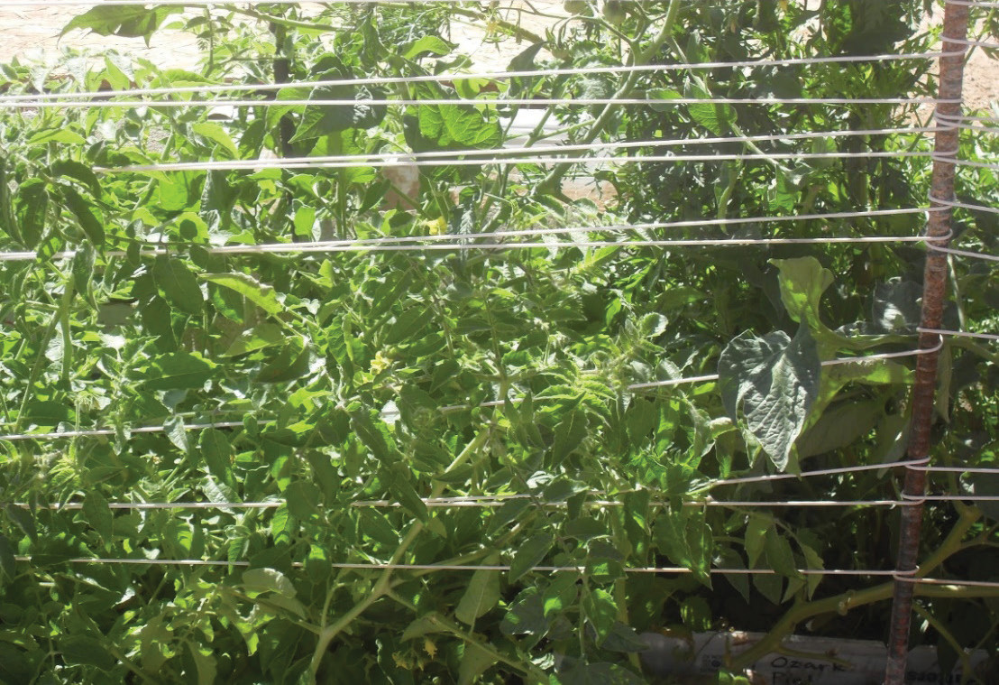

Advantages of trellising and staking
-
(i)
It stops plants from touching the ground. This makes it harder for diseases to spread from the soil to the plants;
-
(ii)
It lets plants grow upwards, using more vertical space. This helps to make more crops in a small area;
-
(iii)
It helps to let more air and sunlight reach the plants. This keeps the leaves dry and less likely to get diseases; and
-
(iv)
It keeps plants away from the pathways. This makes it easier to do farm work such as harvesting.
Pruning in tomatoes
Pruning is a way to help tomato plants grow better. It is important for indeterminate tomato plants. By pruning, we divert nutrients for making tomatoes instead of extra branches. This makes the tomatoes grow faster and bigger. Pruning also helps to keep the plant healthy by letting in more air and reducing humidity. You can do pruning by pinching off the extra branches or using a hand pruner (refer to Figures 8.4 (a) and (b)). Remember, not all tomato plants need pruning. Prunning is only applicable to indeterminate varieties. For determinate and semi-determinate varieties, pruning is not necessary.